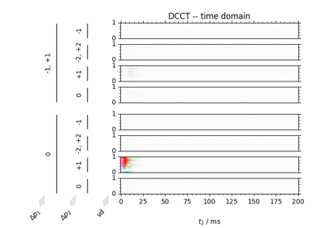
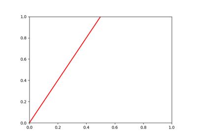
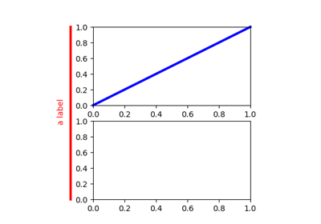
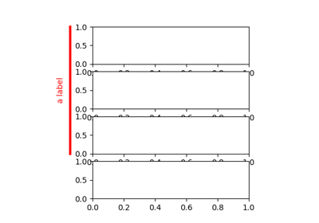

PySpecData Examples¶
Below is a gallery of examples using our various functions.



Using the DCCT function


Individual Functions¶
These are not very important – just tests to verify the performance of individual functions.


Matplotlib Examples¶
(Not plotted in docs). These are really more for development purposes and checks, and not really intended as part of the documentation.

Artist tests


transformation math

draw a span
Text-Only Examples¶
This directory (not plotted in docs) includes some text-only examples.